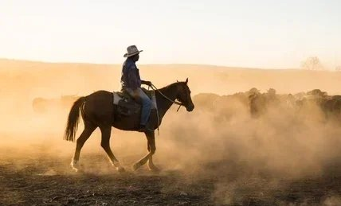
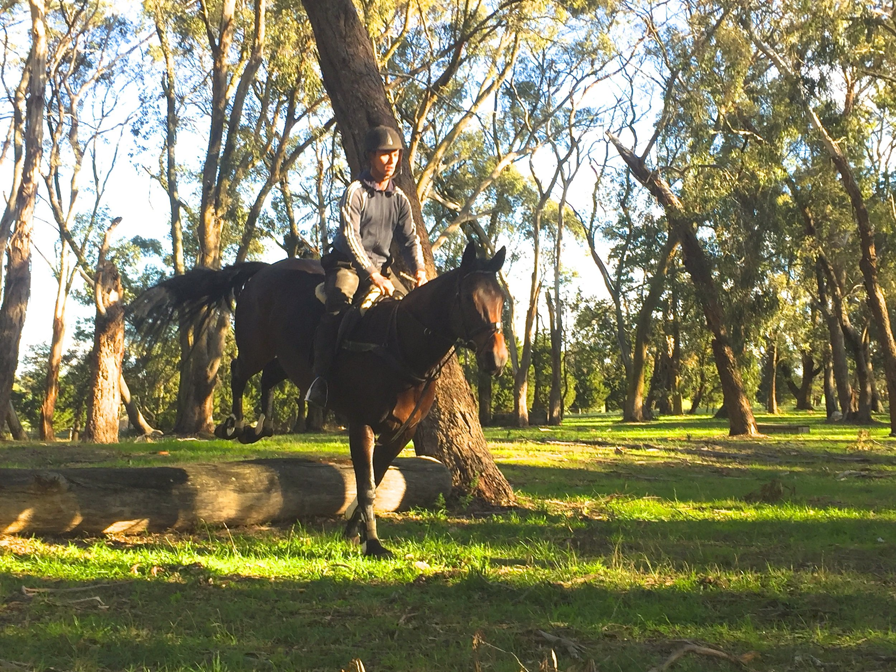
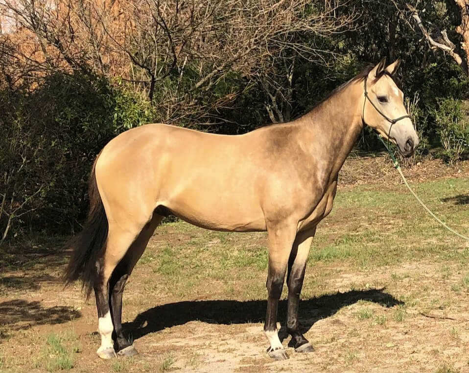
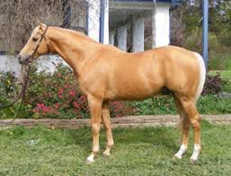
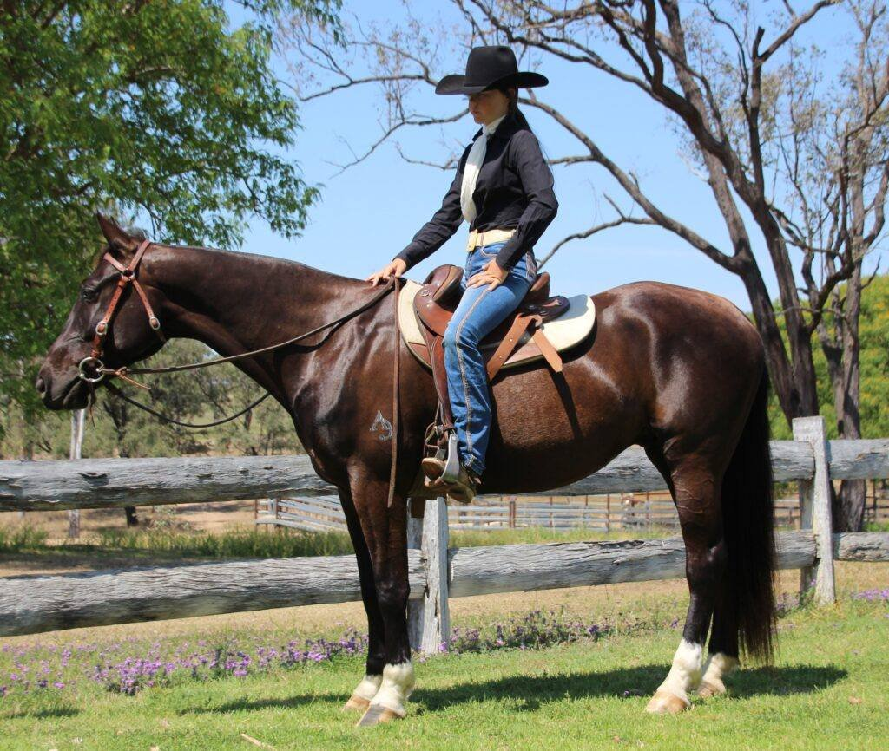
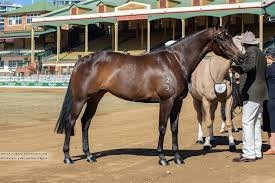

The Australian Stock Horse: Born to Work
Under the relentless sun of the Australian outback, across sweeping plains and through rugged mountain trails, the Australian Stock Horse has long proven its worth — not with spectacle, but with quiet, enduring strength. Born from necessity and shaped by a land both beautiful and unforgiving, it was refined by generations of stockmen and women who needed a partner they could trust with their lives.
While mechanisation has transformed rural work, the Stock Horse remains indispensable on cattle stations where bikes and helicopters cannot reach. Its versatility also fuels strong demand from recreational riders, trainers, and competitors, with modern breeding focused on preserving its traditional working ability while enhancing movement, trainability, and adaptability across disciplines.

Origins Forged in Colonial Need
The story of the Australian Stock Horse begins in 1788 with the arrival of the First Fleet, which brought horses of mixed origin to the continent — primarily of Cape, Arabian, Thoroughbred, Timor Pony, and later Welsh and Barb descent. These early horses were carefully selected for their toughness, as they would need to survive and work in Australia’s harsh and unknown environment.
As settlement pushed inland, horses were needed for mustering, transporting goods, and navigating rugged terrain. Over generations, the best-performing horses were selectively bred for stamina, sure-footedness, agility, and cow sense — natural cattle-handling ability. These qualities formed the early foundation of what would eventually become the Australian Stock Horse.

Formalisation and Breed Development
Throughout the 19th and early 20th centuries, this bush-bred horse remained unregistered but widely recognised for its usefulness. The introduction of Thoroughbred blood in the late 1800s and early 1900s helped refine the breed, improving speed and conformation without compromising resilience. Stallions like Comara Aborigine and Browns Cobbler became early sires whose progeny were valued across the country.
A major turning point came in 1971 with the formation of the Australian Stock Horse Society (ASHS). The Society’s goal was to preserve the best bloodlines of these working horses while ensuring continued versatility and soundness. Early registry horses had to pass inspections for conformation, movement, and temperament. Today, the ASHS remains the principal authority, with over 200,000 horses registered and a growing international reputation.

Defining Characteristics
The Australian Stock Horse is renowned for its intelligence, courage, and adaptability. Conformationally, it is medium-sized — generally between 14 and 16.2 hands high — with a strong, athletic build. It features a well-set neck, sloping shoulders, a deep chest, short back, and powerful hindquarters. Good bone and clean legs are essential for the breed’s demanding work.
The breed accepts a wide range of colours. Common colours include bay, brown, black, chestnut, grey, and palomino. Less common colours such as buckskin and roan also occur. Stock Horses are valued for a ground-covering, elastic stride at walk and trot, and a smooth, balanced canter. Their movement is purposeful, with enough impulsion to handle fast cattle work yet the agility to turn sharply in campdrafting or polocrosse.
In work, they are alert, willing, and quick-thinking, capable of making decisions alongside the rider. At rest, they tend to be calm, people-oriented, and easy to manage — making them suitable for riders of varying experience levels. With good care, many Australian Stock Horses remain sound and active into their mid-20s, with some continuing light work well beyond.
"The Stock Horse’s enduring success lies in its ability to evolve without losing its core identity."

Tack and Riding Style
At the heart of Australian Stock Horse work is the Australian stock saddle — a design developed alongside the breed itself. Built for comfort and security over long days in the saddle, it features deep seats, knee pads for grip, and swinging fenders that allow free leg movement. The saddle distributes weight evenly, reducing strain on the horse during hours of mustering.
Traditionally, riders paired the stock saddle with a practical bridle — often starting with rope halters or bitless bridles for young horses, progressing to snaffles or curb bits as training advanced. This tack supports a riding style that is functional, secure, and centred on working in partnership with the horse.
Stock Horse riders value a mount that is forward-moving and responsive, yet capable of pausing instantly and pivoting with precision. In cattle work, the rider’s body position and subtle rein or leg cues are amplified by the saddle’s design, creating an efficient connection between horse and rider. This integration of tack and technique is not just tradition — it’s a vital part of the Stock Horse’s enduring role in Australian horsemanship.

A Living Symbol of Rural Australia
The Australian Stock Horse is more than a working animal — it’s a living symbol of Australia’s pastoral legacy and adaptive spirit. From the colonial frontier to the Olympic stage, it reflects a deep partnership between people, horses, and the land. The breed gained international recognition when it carried Australian riders at the Sydney 2000 Olympics opening ceremony, a moment that underscored its cultural significance.
As both a cultural icon and a practical asset, the Stock Horse remains an enduring thread in Australia’s equestrian fabric. In modern Australian horse culture, the Stock Horse has maintained its place in the heart of equestrian pursuits. With its athleticism and even temperament, it is a horse that the whole family can ride, adaptable to everything from campdrafting to show jumping — a breed that has earned its place not just in history books, but in paddocks, arenas, and hearts around the world.

Related Stories

The Sandalwood Pony: Indonesia’s Spirited Island Horse
Small in stature but extraordinary in endurance, the Sandalwood Pony has shaped life on Sumba for centuries — from trade routes to the ritual warfare of the Pasola festival.

The Horses of the Camargue
Tough, white, and semi-feral, the Camargue horse is a living part of southern France’s wetland culture. This article explores the breed’s origins, traits, and working life with the Gardians.

The Andalusian: History, Power, and Grace
For centuries the horse of kings, warriors, and artists, the Andalusian shaped both European equestrian tradition and the breeds of the Americas.